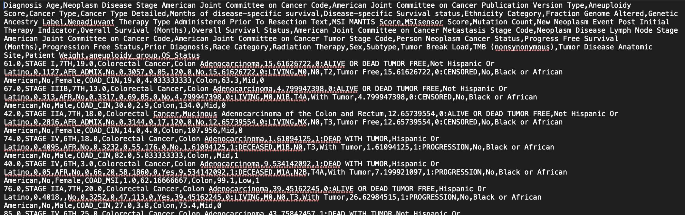
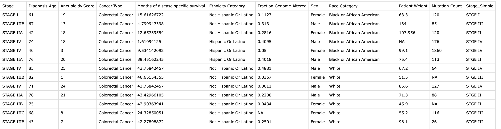
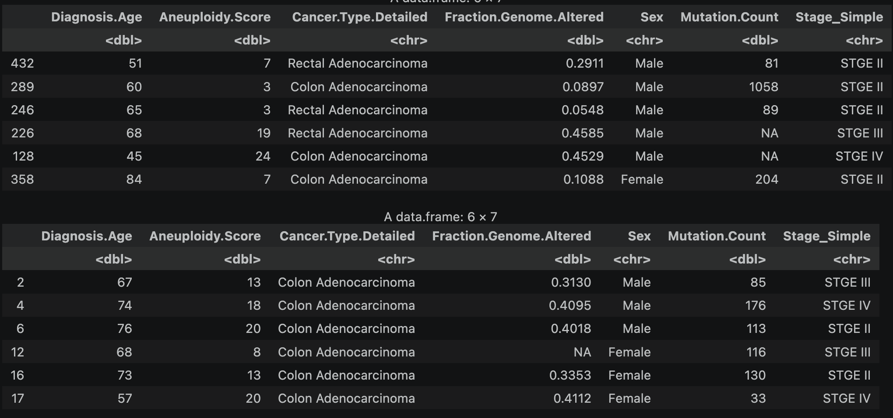
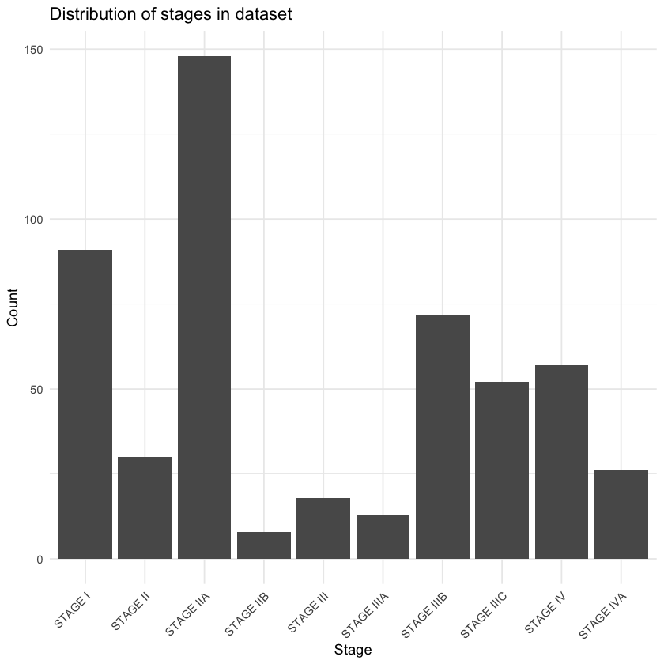
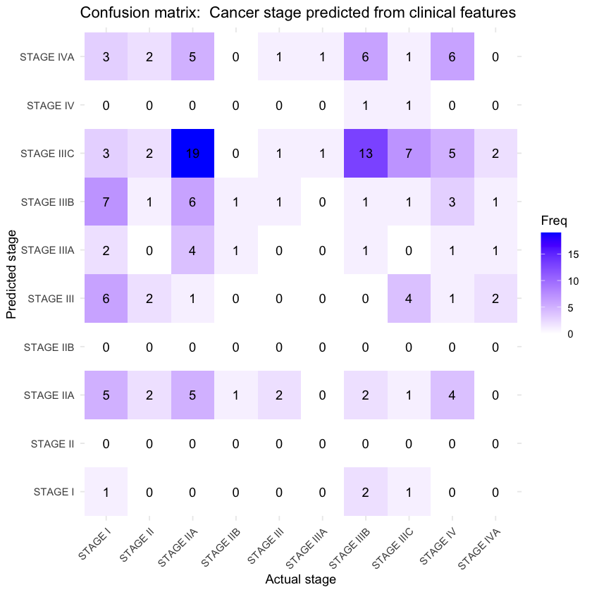
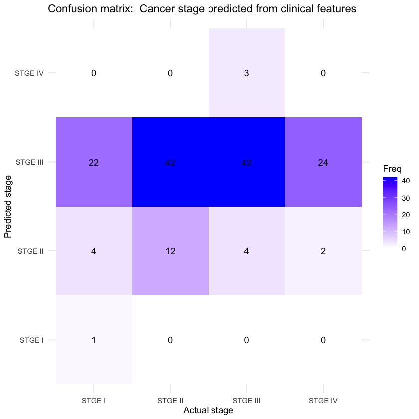
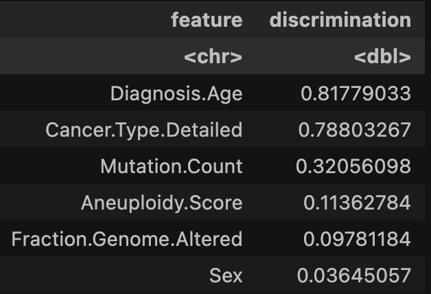

Naive Bayes
Overview
Naive Bayes is a supervised learning algorithm that probabilistically classifies data. It assumes features are independent (hence the 'naive' moniker).
This assumptions lets us use Bayes' theorem to calculate conditional probabilities for each class given the features by simply multiplying the
individual feature conditional probabilities, updating the original priors set as the distributions of the occurrences of the outcome classes.
Multinomial NB handles discrete categorical features with multiple options, using a multinomial distribution as the assumed
probability distribution for each such feature individually. Bernoulli NB is similar, but uses the Bernoulli distribution for binary features, i.e. those for which only two mutually exclusive
outcomes are possible (e.g. present vs absent for a given feature). For continuous data, a Gaussian probability distribution is assumed for the features, and the Gaussian NB model is used.
Applying NB modelling to health data, especially cancer, can be a bit tricky to find appropriate scenarios, as many features are not independent, or at least cannot be assumed indepedent.
Cancer stage prediction from clinical data may be an interesting application, as the outcomes are discrete and mutually exclusive. Feature choice may not be fully straightforward,
as some features may still exhibit correlations, and leakage from other features that share defintions/information with the outcome variable is possible and should be avoided.
The Cleveland Clinic
describes Stage I as there being no spread from the initial tissue site, and Stage IV as metastasis, while Stages II and III are intermediate amounts
of spread. The letter codes, e.g. IIA, IIIB, etc, describe the 'aggressiveness' of the cancer within each stage.
Data Preparation
For this section of the project, R was used instead of Python, in order to leverage the more fleixble NB modeling that can handle mixes
of feature types (discrete, binary, and continuous. R uses Multinomial, Bernoulli, and Gaussian distributions for these feature types respectively). TCGA Clinical Data was used to train a model using clinical features to predict/classify the stage of disease. To prepare the data,
the prevously cleaned TCGA dataset was read in to R, then subset to a specific selection of features that could hold useful signal, but are not obviously correlated with each other
to minimize violations of the independence assumption. Some features were removed due to possible leakage; as things like survival time could be directly correlated with stage.
Then, any rows missing the outcome data were removed (some had an empty string instead of a value). The data was then divided into disjunct training and test sets so the
model can be evaluated, with 70% of the data used for training and 30% reserved for testing, using R's `sample` function, which randomly selects rows. The training sets must be disjunct to properly evaulate the model's ability to generalize. If all the data is used for training, the model may simply "memorize" the data and overfit, but it could demonstrate perfect performance on evalution. Then, in practical use, would be highly inaccurate.
Some of the classes were so under-represented that they did not appears in both sets after the split.
The data was then filtered to retain only the stages present in both datasets.
  
Train/test split example: first rows of the training set on top, and test set below; the rows are randomly assigned and exclusive to each subset.
{kind=link}
{kind=link}
{kind=link}
Code
The Jupyter notebook can be found here. The HTML version can be found here.
Results
Initially, the model accuracy was only approximately 9.09%. Looking at the confusion matrix and the relative class distributions, it looks like some class imbalance, with stage IIA and IIIB overrepresented:{kind=link}

{kind=link}

{kind=link}

Conclusions
This multinomial NB model performed better after simplifying the target classes into well-represented groups. The atttempt with non-simplified classes performed at only 9.09% accuracy- barely better than the 8% chance with baseline randomness that
would be expected with 12 classes. After grouping and simplying the classes, the accuracy was 34.83%, which is about 10% higher than the baseline randomness for 4 classes (25%). Since Naive Bayes is fairly interpretable,
the feature contributions can be examined to understand which features are most influential in the model's predictions:

{kind=link}